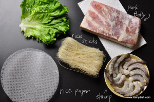

| lettuce | Pork belly |
|---|---|
| shrimp | vermicelli noodles |
| rice paper | cucumber |
Instructions Cook rice stick for 8 to 9 min in a pot of boiling water, turn off heat and let noodles sit for another 3 min, drain the rice stick and rinse it with cold water Boil shrimp for 4 min or until it’s cooked, remove the shrimp from the pot and rinse with cold water Use the pot to boil pork belly for 25 min to 30 min, remove from the pot and rinse with cold water Slice the shrimps in half lengthwise Thinly slice the pork belly soak one rice paper in warm water for 5 sec line up ingredient in this manner: lettuce at the bottom, rice stick on top of lettuce, 2 pork belly slices, 3 shrimps slices, color side face down First, fold the bottom to cover lettuce and rice stick Second, while holding down the lettuce, gently fold the slides to the center Third, roll the spring roll firmly to squeeze out air at the same time mix peanut butter and Hoisin sauce at 1:5 ratio and add a pinch of garlic powder for the dipping sauce
Step by step directions to make Summer Rolls
1. Cook rice stick for 8 to 9 min in a pot of boiling water, turn off heat and let noodles sit for another 3 min, drain the rice stick and rinse it with cold water.
2. Boil shrimp for 4 min or until it’s cooked, remove the shrimp from the pot and rinse with cold water.
3. Use the pot to boil pork belly for 25 min to 30 min, remove from the pot and rinse with cold water.
4. Slice the shrimps in half lengthwise.
5. Thinly slice the pork belly.
6. Soak one rice paper in warm water for 5 sec
7. line up ingredient in this manner: lettuce at the bottom, rice stick on top of lettuce, 2 pork belly slices, 3 shrimps slices, color side face down.
8. First, fold the bottom to cover lettuce and rice stick.
9. Second, while holding down the lettuce, gently fold the slides to the center.
10. Third, roll the spring roll firmly to squeeze out air at the same time.
11. Mix peanut butter and Hoisin sauce at 1:5 ratio and add a pinch of garlic powder for the dipping sauce.
